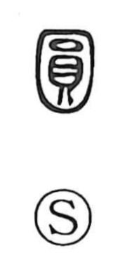

円

Uncategorized
Kun: marui, maru, mawari | On: en
circle ・ round ・ yen
Explanation
Originally written 圓, this is a phono-semantic character with 員 as its core, providing the sound en. In Shirakawa’s reading, 員 depicts a round object set atop a rounded ding tripod 鼎—an ancient bronze vessel used in ritual—whose form is abbreviated as 貝 in the graph; this arrangement itself conveyed the idea of roundness. When 員 later developed other meanings, the form with an added outer circular enclosure, 圓, was used specifically to express “round” and “circle,” a sense that continues in the modern simplified form 円.